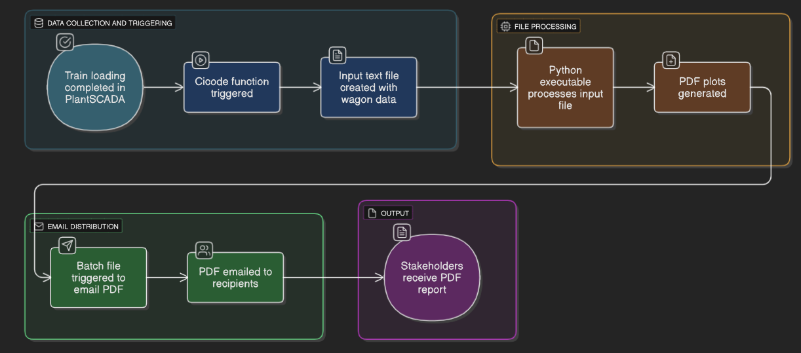

PDF Plot Generation from TLO Manifest
Problem
TLO Loading data from every wagon is already collected. However, this data is rarely used and never visualised.
Solution
Leverage existing scripting in PlantSCADA and integrate a Python script to auto-generate a PDF with plots of relevant train loading data. Have this emailed out to stakeholders after the completion of every train.
Creation from PlantSCADA
After a train is completed, a cicode function is triggered. This creates a .txt file with every wagon's loading data.

Files Needed for Processing and Emailing
After the cicode creates the input txt file, the executable is called. This processes the input file and outputs the PDF plots. Next, a batch file for emailing the PDF manifest to recipients is triggered.

Example PDF